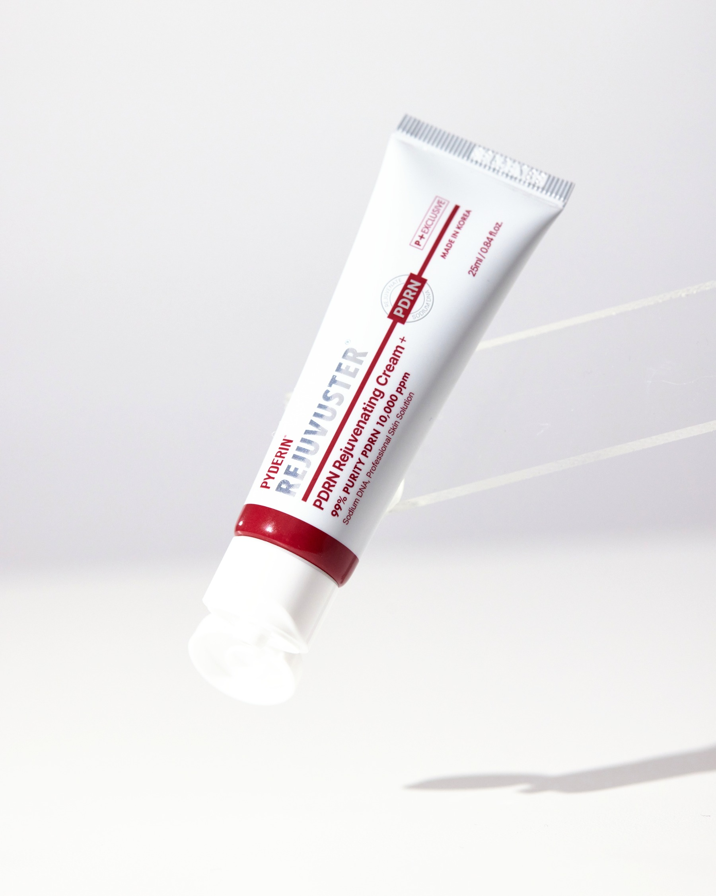

PDRN Rejuvenating Cream+, recommended through pharmacy consultation in Korea.
¹ Genocure certificate of analysis, Derbiome PDRN, April 2025.
Shop now
Results are derived from actual skin-cell experiments, not subjective claims.
Results from skin-cell experiments versus negative control (24 hours) at accredited domestic institutions; not results measured on skin. Assessments: Cellular soothing effect by physical stimulation (KIDS-WOHL01-BE003); Improvement of mitochondrial (ATP) production in stimulated cells (KIDS-CENG01-BE001); Improvement of cell viability (KIDS-CYTO-BE005); Evaluation of filaggrin production (KIDS-BAR01-BE002); Evaluation of collagen production (KIDS-WRIN01-BE014); Evaluation of melanin inhibition (KIDS-MEL03-BE005); Inhibition of aging-marker production in UV-aged melanogenic cells (KIDS-WRIN10-BE003); Antioxidant effect on proteins in hyperpigmented areas (KIDS-BEH103-BNK); Improvement of the skin barrier against external (physical) stimuli (KIDS-BEH103-BNK).
For skin-barrier stabilization and hydration balance.


After the previous step has been fully absorbed, apply an appropriate amount. Allow approximately 10 minutes for absorption, then proceed to the next step.
Continuous use for at least two months is recommended.
Contains niacinamide and may increase sensitivity to UV exposure. Use sunscreen during the period of use.
It is recommended through professional consultation based on skin condition and objectives. Pharmacies can provide tailored guidance considering skin type and lifestyle.
Compared to the typical 50–1,500 kDa range of PDRN, REJUVUSTER is designed with an ultra-low molecular weight of 97 kDa to maximize skin-barrier permeation and biological delivery efficiency.
We use PDRN derived from domestic chum salmon; all processes are hygienically managed in GMP-compliant manufacturing facilities.